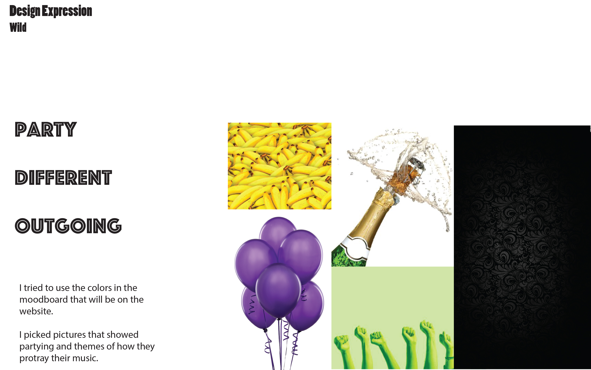
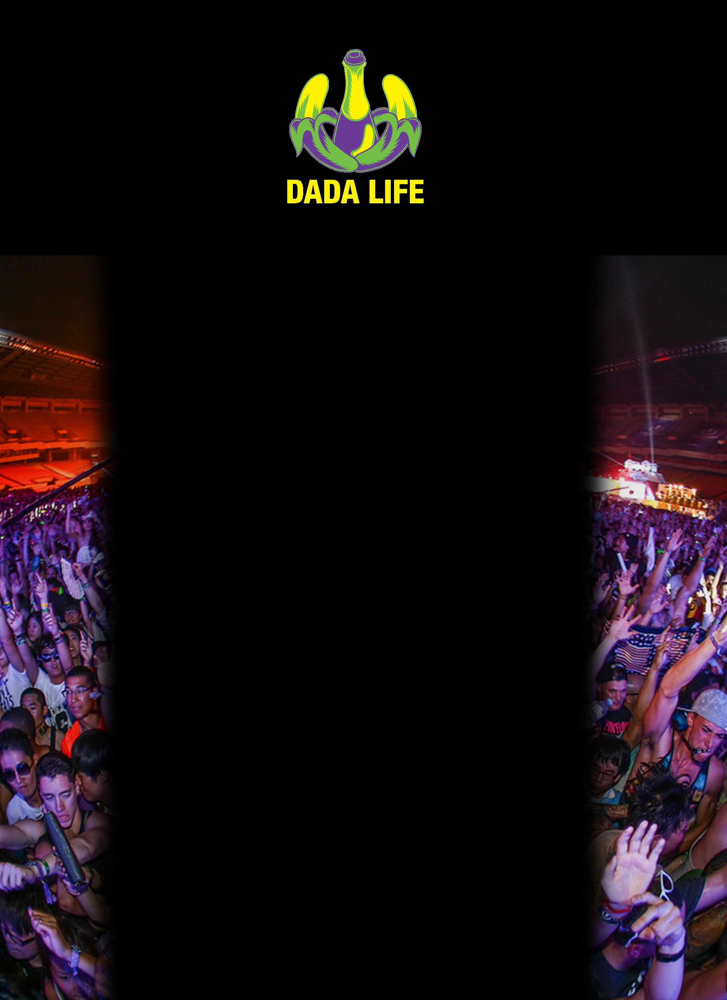

I decided to go with this wireframe due to the single column design of the project. The logo at the top gave a clear representation of what the project was about.
 I chose these moodboards to contain the colors of my project and to give off the party feel of their music. I ended up varying from the moodboards using a different background.
Project 1I used the same colors and used a one column layout like I planned in the moodboard's and wireframe. It was centering the text and pictures from my documents into the middle of the page for the single column. I felt it was easier than i thought it would be to use margins. I found it frustrating to get the background how I wanted it without it throwing off everything.
My take away would be that I would change the layout of the page. I feel I could have made it look better than I did. I feel that it looked boring. I liked the idea of using the scaling text and I would like to get better at it so it fits the page better.